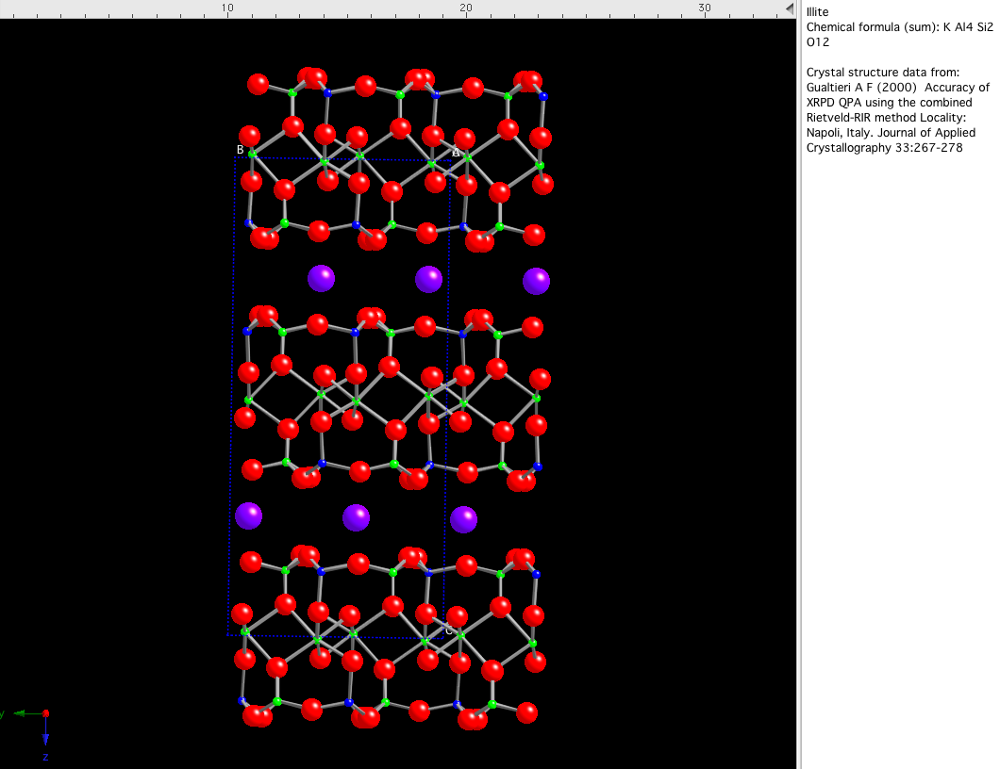
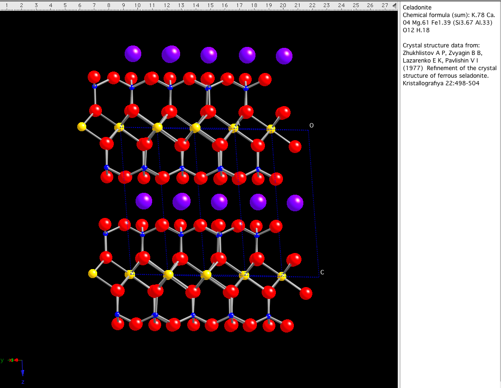

9 - Lecture notes for Clay Mineralogy
Required reading: Moore
and Reynolds, 148-162
Brindley and Brown, pages
169-189
Newman,
pages 48-84
Classification of hydrous layered silicates
2:1 with interlayer charge of 0.6 < X
< 0.9
Dioctahedral
Illite is a 2:1
(~10Å) structure similar in composition to muscovite,
buts differs by having slightly more Si, Mg, Fe and H2O and less
K.

Often reported with a layer charge of 0.75. This an average value
and it is likely that there is a range of layer charges within
any one sample.
K 0.75
Al 1.3 Mg 0.25 Fe+30.25 Si3.7Al0.3 10(OH )2
Paragenesis: Illite forms
authigenically during hydrothermal alteration and during burial
diagenesis of smectite-rich shales (including bentonites). Degraded
muscovite (formed during weathering) also takes on the XRD
characteristics of illite. See notes
that follow on XRD identification of illite.
Sericite
is a textural term used in the description of
rocks in the field or in thin-section (denote by relatively high
birefringence). In most cases, sericite is extremely
fine grained (i.e., beyond visual resolution). Sericite
is not a mineral name! Mineralogically, sericite is usually either
(1) illite,
(2) mixed-layer illite/smectite, or (3) muscovite.
Celadonite K
(Mg,Fe+2)(Al,Fe+3) Si4O10(OH )2

Composed of a "tetrasilisic sheet",
meaning that all the layer charge deficiency comes from the octahedral
sheet.
paragenesis: Altered basalt - typical infilling of amygdules or
lining of vesicular voids.
Glauconite - Appears like an Fe-rich illite, on average
composition. Also some trioctahedral character to many glauconites.
K0.75(Al,Fe+3)1.3 (Mg ,
Fe+2)0.25 Si3.7Al0.3 O 10(OH )2
Paragenesis: Occurs as aggregates and pellets in marine (but not
solely) sediments. Appear to form at lower temperatures in reducing,
Fe-rich snd P-rich environments. (e.g., inside fecal pellets). Slow
sedimentation
rates. Bacteria may induce the formation of this mineral.
Sometimes the term glauconitic is used as a descriptive term to
conotate the fact that a rock is marine in nature (e.g.
glauconitic sandstone are often interpreted as marine entitities).
Trioctahedral and/or
Dioctahedral
Vermiculite [Mg0.54H2O] (Mg,Fe+2)3Si 3 Al O10(OH )2
Paragenesis: Alteration of pyroxene, biotite, chlorite, phlogopite
in the hydrothermal and weathering environment.
Because vermiculite inherits its interlayer and structural chemistry
and charge distribution from so many possible parent sources, it's
properties can be quite variable.
Repeat distance for vermiculite with hydrated Mg in the interlayer
site is about 14.5Å.
The fact that the layer charge comes from the tetrahedral sheet
causes the hydrated layer to stay at this 14.5 Å thickness
(as opposed to other 2:1 structures with lower layer charge that,
as we will see, can expand to 18Å thickness).
Due to the high hydration energy of Mg in the interlayer site,
the sphere of water is difficult to remove. Vermiculite grabs free
water
readily and is often used as a soil amendment to help hold moisture.
Hydroxyl Al-interlayer (HIV) varieties are "incomplete" chlorites where
the brucite-like interlayer sheets may be discontinuous - They do not
undergo collapse upon heating to 300° C.
Operationally defined as that which remains at 14.5Å after
Mg saturation and glycol solvating. If the lattice expands to
18Å, then
it is a lower charge 2:1 structure (smectite).
2:1 with interlayer charge of 0.2 <
X < 0.6
Smectite Group Most diverse of the 2:1 groups. Very fined
grained (no large crystals known to exist). Small layer charge
allow exchange of interlayer cations. The weak bonding between
structural units allow water molecules to coexist. The spacing
between layers is therefore variable (10Å to 18Å)
depending on the size of the 1) interlayer cation, 2) the hydration
energy of the cation (function of size, electron shell configuration
and valance state), 3) associated organic molecules, and 4) the
relative humidity.
Trioctahedral smectites
Saponite - positive octahedral
layer charge and large (-0.66) tetrahedral layer charge.
M+0.33(Mg2.67Fe+30.33) Si3.33Al0.67O10(OH )2
Paragenesis - Formed in alkaline
lakes (Mg variety) and alteration of sea-floor basalts (Fe variety)
Hectorite - Li
and F substituted M+0.33 (Mg2.67Li0.33) Si 4 O10(OH,F )2
Paragenesis: formed from altererd tuffs and hot spring activitiy.
Sauconite -
Zn-rich variety - associated with ore deposits.
Dioctahedral smectites
Montmorillonite - Tetrasilisic,
therefore, layer charge derived from octahedral sheet.
"low-charge" Montmorillonite - Wyoming type (Na)
Na0.3Al1.7Mg0.3Si4O10(OH )2
"high-charge" Montmorillonite - Cheto type (Ca)
Ca0.3Al1.6Mg0.3Si4O10(OH )2
Beidellite
- layer charge from tetrahedral sheet
M+0.3Al2Si3.7Al0.3O10(OH )2
Nontronite
M+0.3Fe+32Si3.7Al0.3O10(OH )2
Bentonite
is a genetic rock term. Bentonite is not a mineral name!
Bentonites are usually found as distinctive beds formed by the
deposition and alteration of volcanic ash. Typically, they are
composed of montmorillonite, but also can contain glass, mixed-layer
clays, illite, kaolinite, quartz, zeolites, carbonates....